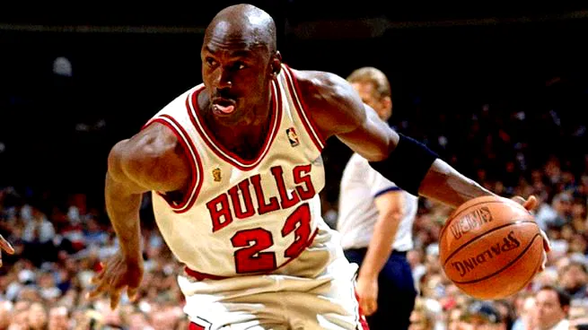

Quando Michael Jordan entrou na NBA em 1984, ele não transformou apenas o basquete — ele mudou para sempre a indústria dos sneakers. Sua parceria com a Nike deu origem a um dos maiores fenômenos da cultura urbana: a linha Air Jordan.
Na época, os tênis de basquete eram simples e pouco ousados. Mas em 1985, o lançamento do Air Jordan 1 quebrou padrões com seu design vermelho e preto chamativo. A NBA chegou a proibir o modelo por não seguir as regras de uniformes da liga — e a Nike transformou a polêmica em marketing, pagando as multas e promovendo o tênis como um símbolo de rebeldia e atitude.
Pela primeira vez, um atleta não estava apenas usando um tênis — ele estava representando uma marca pessoal. Jordan trouxe identidade, estilo e exclusividade ao mundo dos sneakers. Cada novo lançamento da linha Air Jordan se tornava um evento, criando filas, expectativa e desejo. Assim nasceu a cultura dos “sneakerheads”, fãs e colecionadores apaixonados por edições especiais.
Além do impacto nas quadras, os Air Jordan ultrapassaram o esporte e dominaram a moda, a música e a cultura pop. O que começou como um tênis de performance virou um símbolo de status, expressão e estilo de vida.
Hoje, décadas depois, a marca Jordan continua sendo uma das mais influentes do mundo. O legado de Michael Jordan não está apenas nos seus títulos e enterradas históricas, mas também na revolução que ele causou ao transformar um simples tênis em um ícone cultural global.